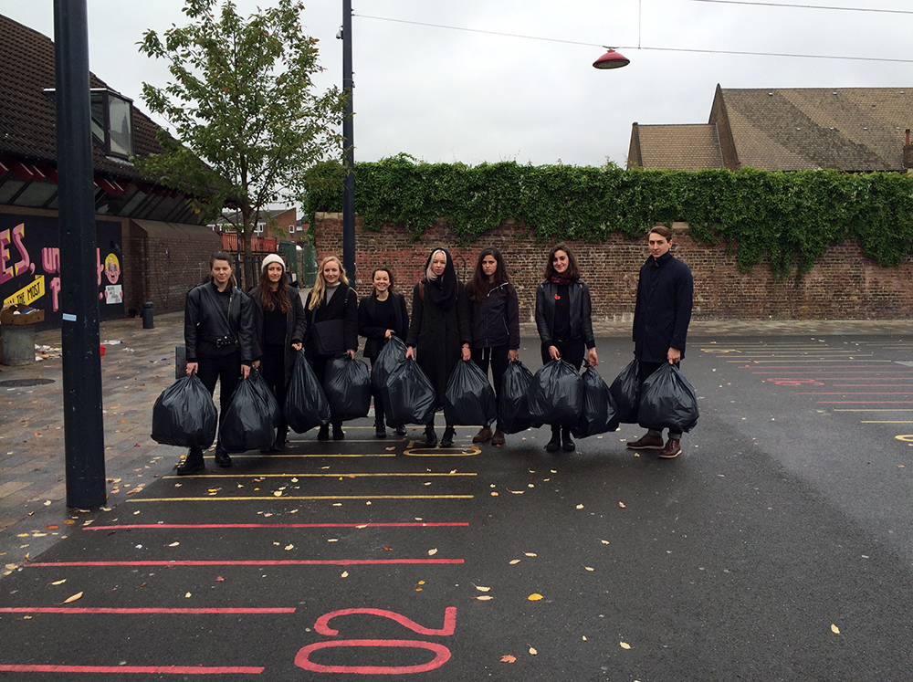
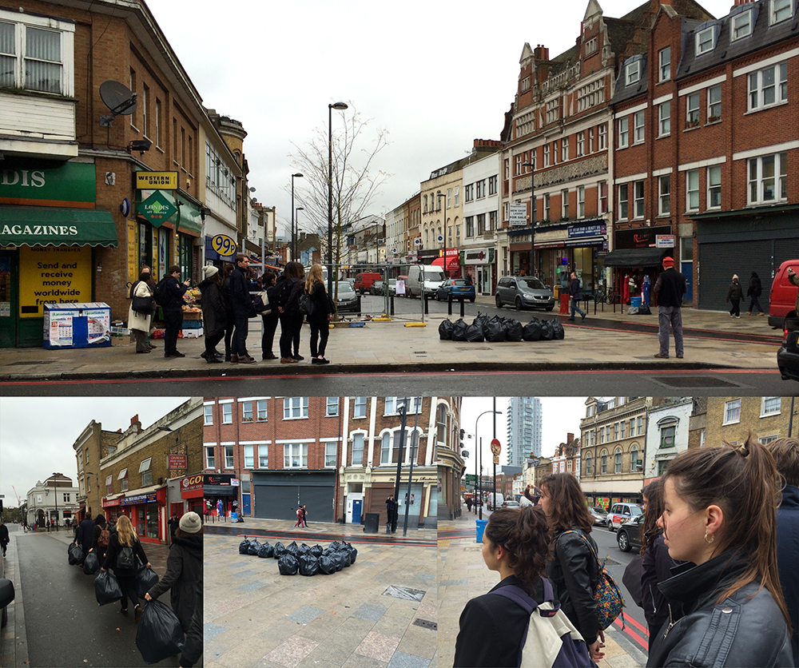
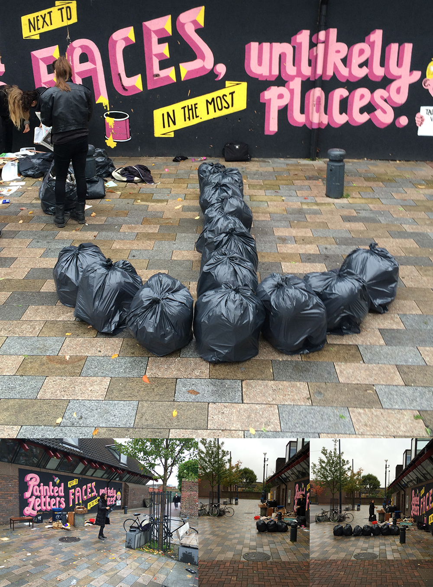
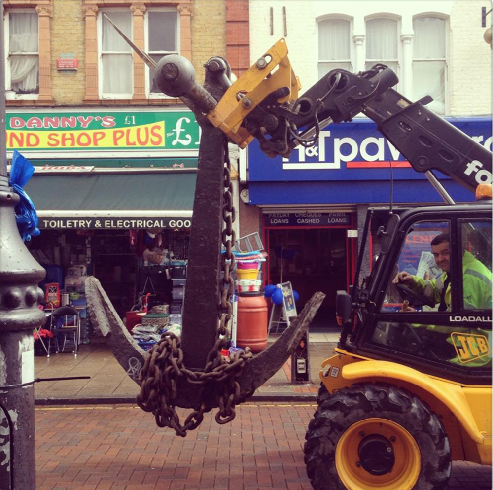
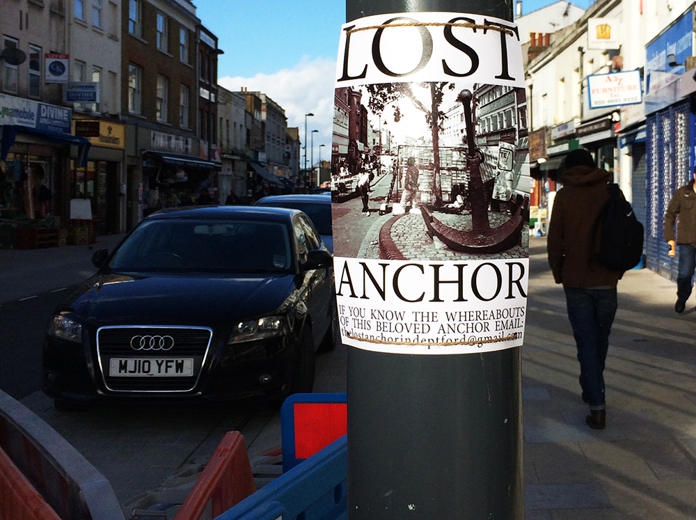

Tess Faria And Ben Burtenshaw will return the Anchor to Deptford high street. The anchor was originally intended as a monument to Deptford\'s maritime history. But in recent times had been appropriated by the community to represent something new. In April 2013 it was removed by Lewisham Council to create a "welcoming, open 'entrance' to the street ".Through a one hour performance the anchor will be \'dropped\' on to Deptford. With the help of the community the now silenced space at the end of the high street will be re-appropriated. Highlighting how this site has served to mediate with an altering local identity/ history not always relevant to war. And what this silenced space now means.

The anchor that once adorned the High St will be \'dropped\' on to Deptford. Participants will walk down the street collecting materials to briefly reconstruct the anchor and then remove it after the 2 minute silence. With the help of the community the now silenced space at the end of the high street will be re-appropriated. Highlighting altered local identity; separate to a maritime heritage.
Sunday 10th November : we are beginning to understand this performance as an act of rekindling/ sparking, in a conflict between some of Deptford\'s community and the development process taking place there. The contingent we have assembled to join in this performance are key in the rekindling/sparking process as sites of and potential sites of disdain or activism. How they approach, ignore or come to terms with this existing site of conflict will become evident over lunch.
Tomorrow a contingent of fourteen people will walk from The Albany, Deptford to the south end of Deptford high street; the previous site of an anchor monument. The contingent will lay down bin bags in the shape of an anchor on the ground. We will wait for 2 minutes during the organised silence and then remove the bags and return to the Albany. After this we will meet back at our studio for a shared lunch in front of the fire.
I\'m Daniel Gaffney, an anthropology graduate and English teacher. I participated in turn right at the anchor, 2013. I arrived at the Albany to see Tess Faria and Ben Burtenshaw sifting and filtering through a large pile of rubbish and filling bin bags. Ben then gave us a briefing on what we were about to do, at this point the event seemed disjointed from me and the other participants. We then began walking down the high street in a uniformed manner. Once we had "reconstructed the anchor" we observed the 2 minute silence. We then returned down the high street, and later met Tess and Ben at their studio for lunch. This element of the piece seemed fundamental in understanding what we\'d been a part of. Ben described how our involvement had made us sights of "disdain or activism". The explanation and theory of the event gave clarity to me and the others involved, the purpose was evident.
   